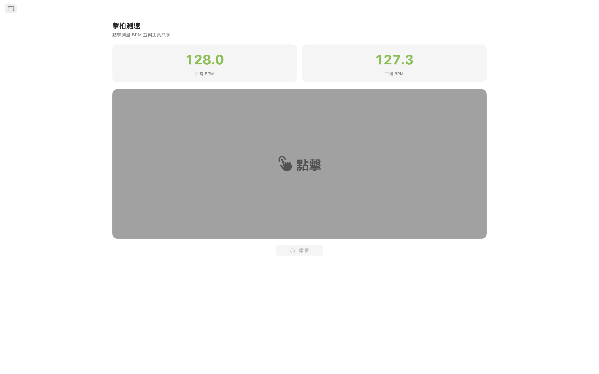
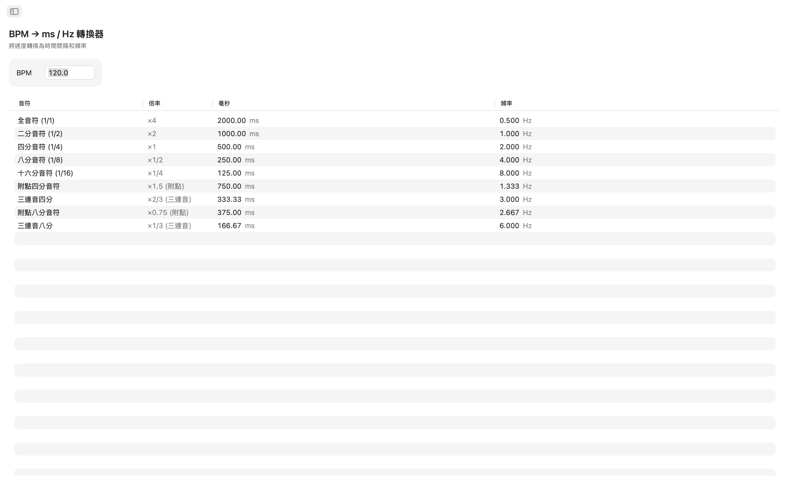
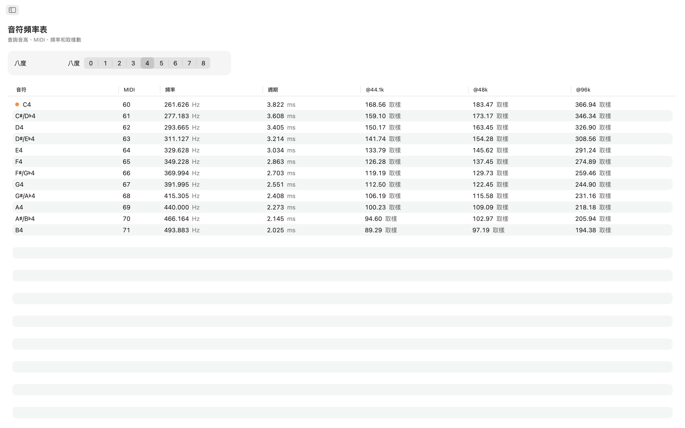
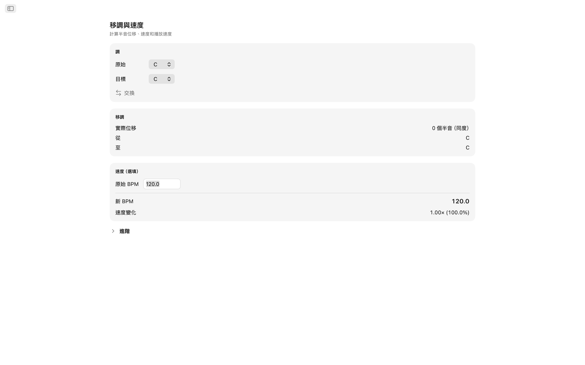
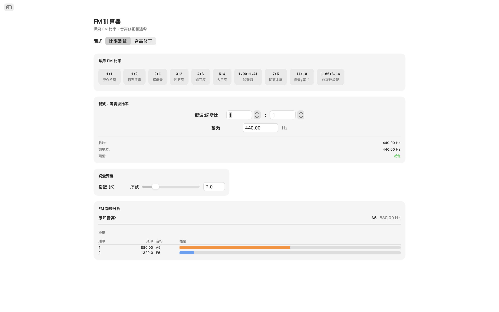
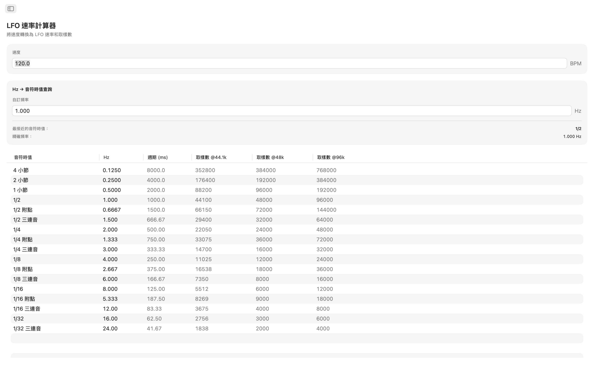
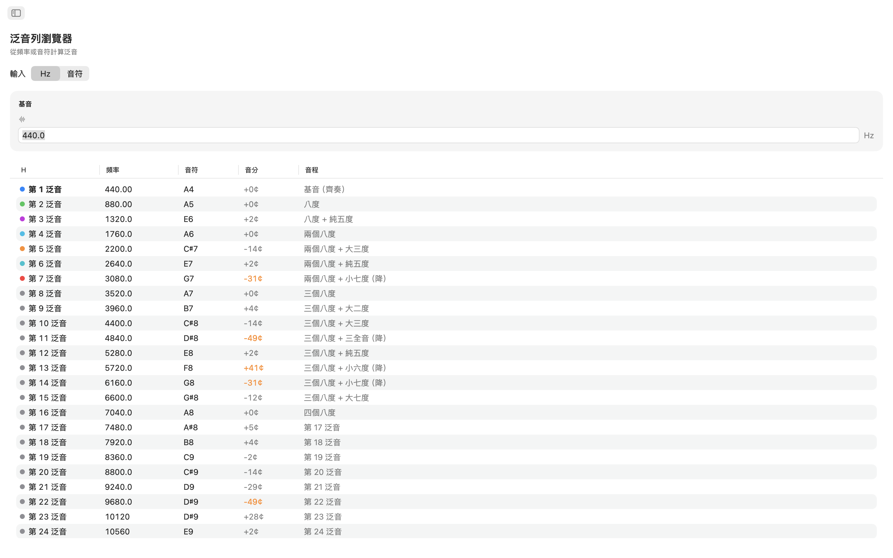
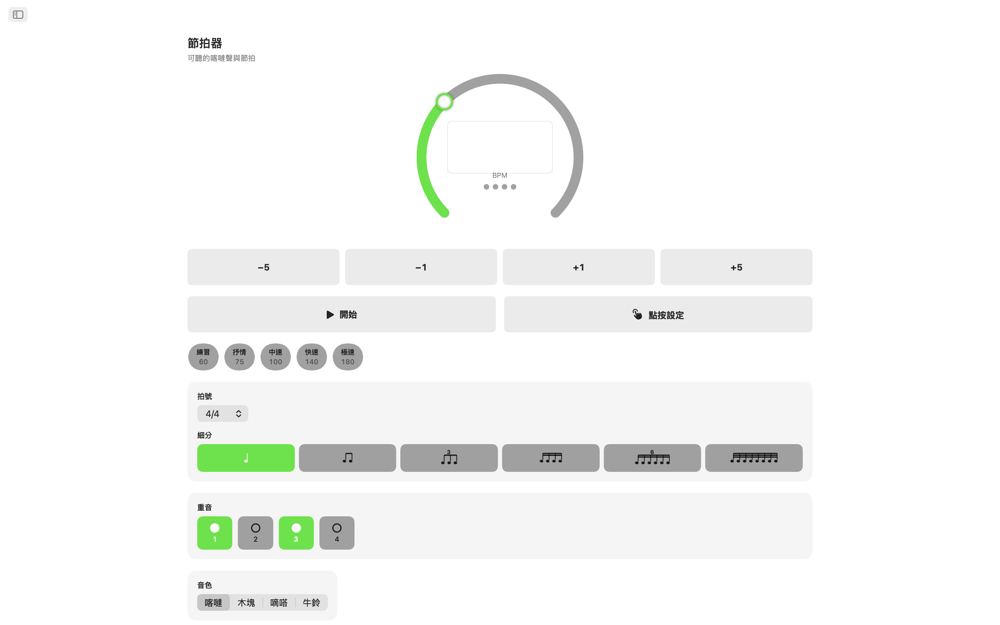
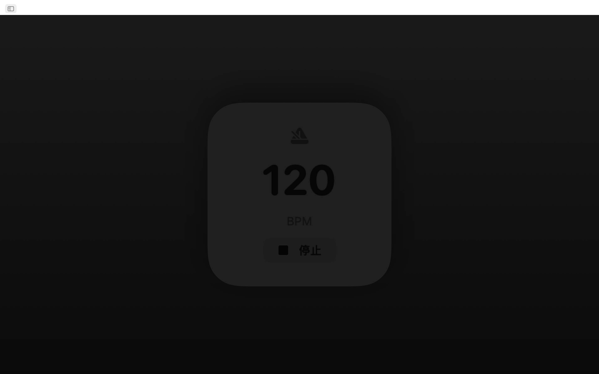
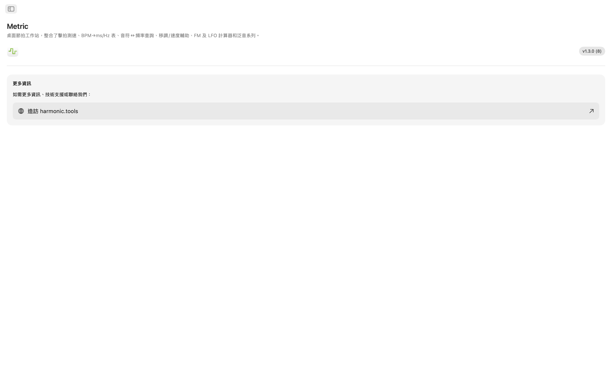

Metric macOS版
適用於macOS的視窗式時間與頻率工具組，現在內建節拍器。無論您是在保持節奏、在混音中設定延遲時間、調整FM音色、同步LFO還是移調取樣，Metric都能為您提供即時、精確的答案，集於一個簡潔的側邊欄導覽應用程式中，與您的DAW並排使用。現在加入Siri、Shortcuts和Notification Center小工具。
- 節拍器，含觸拍測速與視覺節拍
- BPM → ms / Hz 轉換器（直拍、附點、三連音）
- 音符 ↔ 頻率表（108個音符，可調音準）
- 移調與速度、FM計算器、LFO速率、32次泛音
- Siri、Shortcuts和Notification Center BPM小工具
截圖
包含隨網站主題切換的淺色和深色截圖。












功能特色
- 節拍器：精準的節拍器，含速度轉盤、點擊設定速度、拍號和細分，以及清晰的視覺節拍指示器。
- 觸拍測速：點擊大觸拍區域測量速度。查看上次點擊的即時BPM和最多八次點擊的滾動平均值。一鍵將任一讀數傳送到BPM轉換器、移調或LFO速率工具。速度自動同步到每個工具。
- BPM → ms / Hz 轉換器：輸入速度即可查看全音符、二分音符、四分音符、八分音符和十六分音符的直拍、附點和三連音值。每行顯示毫秒和Hz頻率，方便您設定延遲、殘響預延遲或側鏈時間，無需再用計算器。
- 音符頻率表：瀏覽從C0到B8的全部108個半音音符。每個音符顯示其MIDI編號、Hz頻率、毫秒週期以及44.1 kHz、48 kHz和96 kHz的取樣數。中央C標記便於快速參考。基於A4 = 440 Hz。
- 移調與速度：選擇原調和目標調，查看半音偏移、音程名稱和精確的DAW移調值。加入原始BPM後，Metric會計算新速度和播放速度比率。使用音分滑桿（±100）和跨越兩個完整八度（±24半音）的速度滑桿進行微調。
- FM計算器：比率探索器允許您設定載波和調變器比率及基頻，並從十種經典FM預設中選擇，從空心八度（1:1）到非諧波鈴聲（1:π）。音高校正模式反向運作：選擇目標音符即可獲得精確的載波和調變器頻率。兩種模式都顯示邊帶表，含多達十個分音及其頻率、最近音符和由調變指數滑桿驅動的色彩編碼振幅。
- LFO速率計算器：將任意BPM轉換為17種音樂細分的LFO速率，從四小節到1/32三連音。每行顯示Hz、毫秒週期以及44.1 kHz、48 kHz和96 kHz的每週期取樣數。反向查詢讓您輸入任意Hz值即可找到最接近的音樂細分，並清楚顯示誤差。
- 泛音列探索器：從頻率或任意音符開始，查看前32次泛音的頻率、最近音名、音分偏差和音程標籤。低階泛音以顏色編碼便於識別。大於30音分的偏差會標示出來，方便您一眼發現非諧波內容。
工具間互相聯動
測一次速度即可同步到所有工具：BPM轉換器、移調和LFO速率共享同一個即時BPM。音符頻率、FM計算器和泛音均以A4 = 440 Hz保持一致。
Siri、Shortcuts與小工具
免手動操作Metric。讓Siri啟動或停止節拍器、設定BPM、觸拍測速、將BPM轉換為毫秒、查詢音符頻率或移調速度。每個工具也都是Shortcuts動作，BPM小工具讓您的速度顯示在Notification Center中。
專為桌面打造
- 完全離線運作——無需帳號、無廣告、無追蹤
- 原生macOS應用程式，側邊欄導覽
- 深色模式感知介面，跟隨系統外觀
- 三種業界標準取樣率：44.1 kHz、48 kHz和96 kHz
- 可調整視窗大小——與DAW並排使用
無論您是設定延遲的製作人、雕琢FM音色的音效設計師、調整振盪器的合成器演奏者還是檢查頻率的音頻工程師，Metric都將每一個時間與頻率答案呈現在您的桌面上。